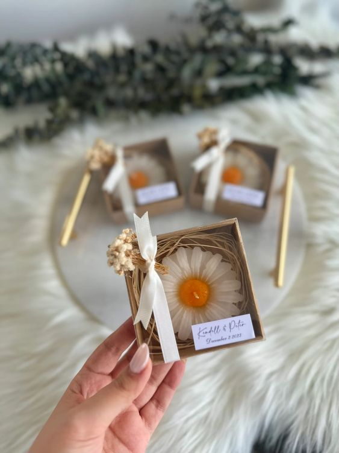

Scented Candles

Sunflower Scented Candle
A sunflower-scented candle typically features a fragrance that mimics the pleasant and subtle aroma associated with sunflowers. The scent is often light, floral, and refreshing, capturing the essence of blooming sunflowers in a field. Sunflower-scented candles are popular for creating a cheerful and uplifting atmosphere in homes or spaces. The fragrance may include notes of sun-kissed petals, a hint of greenery, and sometimes a touch of sweetness.
When using a sunflower-scented candle, it can evoke a sense of warmth and brightness, making it a popular choice for various occasions. Some people enjoy using sunflower-scented candles during spring and summer, as the fragrance aligns well with the vibrant and lively energy of these seasons.
If you have a specific sunflower-scented candle in mind or if you're looking for sunflower-scented candle you can browse it in our website. Keep in mind that candle scents can vary, so it's a good idea to read product descriptions or reviews to ensure the scent matches your preferences.
 Jar Scented Candle
Jar Scented Candle
A jar-scented candle is a candle that comes in a glass or ceramic jar, and it is infused with a particular fragrance to add a pleasant scent to the surrounding area when burned. Jar candles have become popular due to their aesthetic appeal, safety features, and the ability to contain the melted wax, making them convenient and mess-free.
When it comes to scents for jar candles, there is a wide variety to choose from, catering to different preferences. Common scents for jar candles include floral fragrances, fruity notes, herbal scents, seasonal aromas (such as pumpkin spice or pine for fall and winter), and many others. The fragrance is typically released when the candle is burned, filling the room with a delightful scent.
Jar candles often come with lids, which can help preserve the fragrance when the candle is not in use and prevent dust or debris from settling on the wax. Additionally, the jar itself can be part of the decor, and many people repurpose the jars once the candle is finished.
If you're looking to purchase a jar-scented candle, you can find them in various sizes, shapes, and scents at local stores, specialty candle shops, or online retailers. When selecting a jar candle, consider the scent, the quality of the candle, and any safety features provided by the manufacturer.
Give-away Scented Candle
A giveaway scented candle is a popular item for promotions, events, or as a gesture of appreciation. These candles are often designed to be visually appealing and feature a pleasant fragrance to make them attractive to recipients.